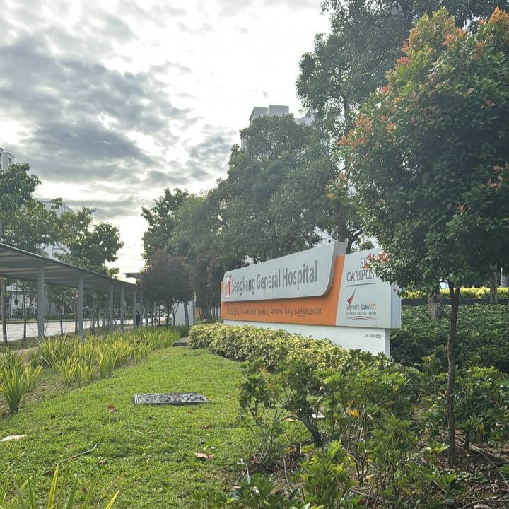
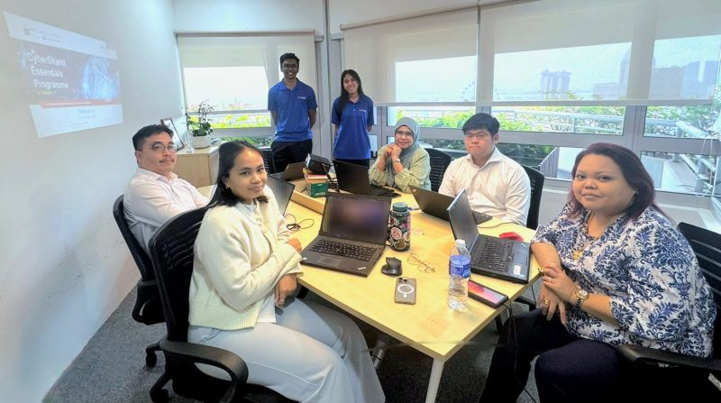
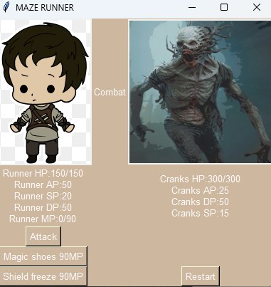
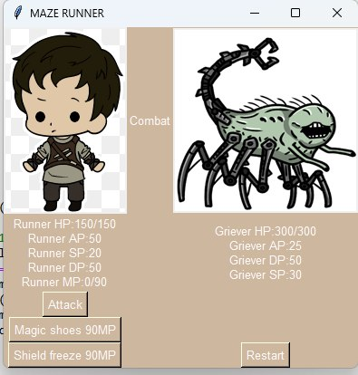
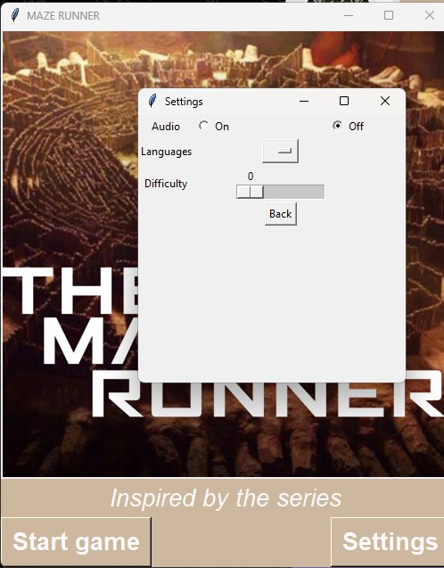
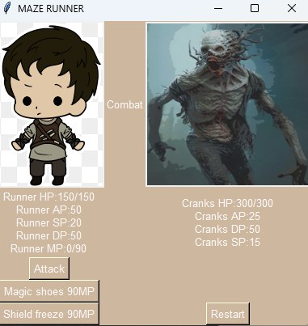
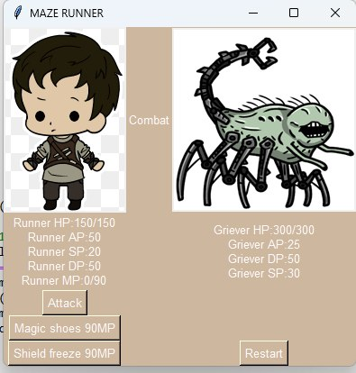
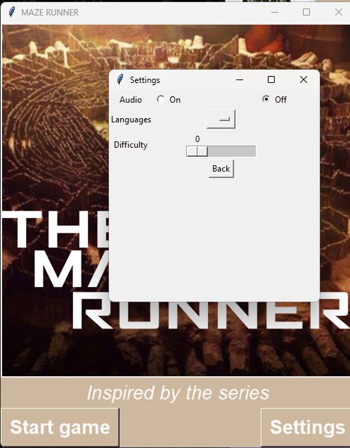

About
I am Nur Shakira and I am currently a final year Cybersecurity and Digital Forensics student in Temasek Polytechnic, Singapore.
I am currently working part-time in the F&B industry while focusing on obtaining certifications and improving my skills.
I've always loved technology and is grateful to have the opportunity to learn more about it.
Here are some things I have learnt:
- 📁 HTML & CSS
- 📁 Python
- 📁 Javascript
- 📁 mySQL
- 📁 Kali
- 📁 Linux
- 📁 Windows
- 📁 PHP
- 📁 QGIS
- 📁 Power BI
In my free time, I love to read, spending time with loved ones, gaming, F1, legos, shows, movies and more!
During my time in polytechnic, I have explored many aspects of cybersecurity and basic IT. With my interest in geography and strength in technology, I have found joy and decided to venture more into sustainable aspect of technology, in hopes I will be able to pursue my interest and strength co-currently.
Certifications
- Geographic Information Systems (UC Davis) course

- GIS, Mapping, and Spatial Analysis Specialisation (University of Toronto) - In Progress
- University Preparatory Programme (UPP) Mathematics (Temasek Polytechnic) - Applied
Resume/Experience
Intern Experience
Alphaeus
April to September 2025
ID Administrator, SingHealth
Based in Sengkang General Hospital, my role as an ID Administrator is to allocate SingHealth's staff (doctors, nurses, nursing students, medical students etc.) with their Active Directory IDs, account provisioning for SingHealth applications, password reset and deletion of staff accounts upon departure.
Tasks:
• Provision and deletion of SingHealth applications accounts and Active Directory ID.
• Assist with urgent issues requested by user through calls from SingHealth Helpdesk.
• Assisted colleagues with deletion or creation of accounts upon request.
• In-charge of Sengkang General Hospital, Sengkang Community Hospital and Outram Community Hospital accounts. (Assisted for other institutions upon request).
• Communicated with external vendors (Synapxe, Kyndryl) when needed.
• Work closely with Excel.
• Send daily reports when assigned.
Due to PDPA, I am unable to share any photos of SingHealth applications and details. However, I took a picture on my last day!

School Experience
The Consortium of Cybersecurity Clinics
September to May, 2025-2026
Part-Time Student Ambassador, Temasek Polytechnic
Tasks:
• Conducted the CyberShield Essentials Programme for Small and Medium-sized Enterprises (SMEs).
• Equipped participating organizations with practical and relevant cybersecurity knowledge to strengthen their security posture.
• Addressed and clarified cybersecurity practice and software-related queries raised by companies during training sessions.
I recently held the CyberShield Essential Programme with my teammate for Nakoorsha Law Corporation to lawyers, paralegals and managers.

CCA Experience
TWIST Publicity Sub-Committee
2025-2026
I decided to join TP Women in Science and Technology publicity sub-committee to create new friends and connections during the networking opportunities they offer. Since it is my final year, I decided to spend more time looking at the opportunities offered in the STEM industry so that I have some ideas of the industry before graduating. It is also an outlet for me to express my interest in Publicity by helping curate posters for the Instagram account especially with my female peers in a male-dominated industry.
IITSC Sub-Committee
2023-2026
Throughout my poly experience, I was part of the Informatics and IT Studies Club sub-committee. Being part of the committee allowed me to involve myself in school events (Open House, Orientation, Bonding Camps etc.). Being part of the studies club allowed me to make new friends with different students from different courses within the School of IT varying from different ages. This allowed me to learn more about their experience in their respective courses while also making new friends and getting to know one another. They also provide community events that we can choose to take part in to give back to the community and the school.
Projects
CCA Projects
TWIST Instagram Post designed by Evelyn and I.
School Projects
Year 1:
Skills: Python , Tkinter
I used Python and Tkinter to create a turn-based game with GUI in my Computational Thinking module.
 





Year 2:
Skills: PHP, MySQL, HTML , CSS and JavaScript
I used PHP, MySQL, HTML , CSS and JavaScript to create a Secure Robotic Course Management System. System is created for managing robotic course materials, students assignments and scores. To ensure its security, we had to implement security measures such as CSRF tokens, Authentication, Authorization, Input Validation, Encryption and Error Handling. Please click on the images to enlarge them.
Year 3:
Skills: QGIS, PowerBI
I used QGIS and PowerBI to create infographics for my module poster assignment - grade A. Data Analytics for Environmental Sustainability module broadened my interest with QGIS and Geospatial data. Please click on the images to enlarge them.
Contact
You can contact me on the following platforms:
📧 bnurshakira@gmail.com